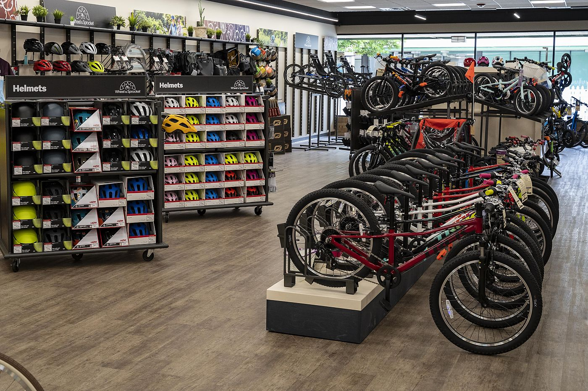
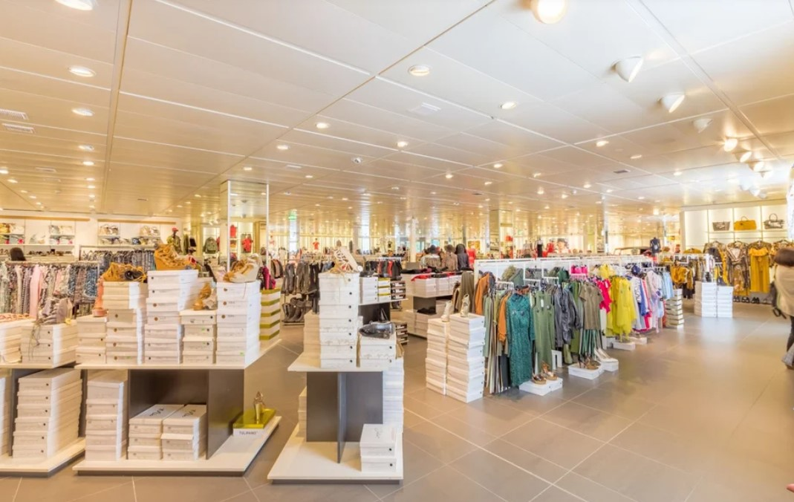

Malcom & Sons, a well-established fashion and bike company, is facing challenges in optimizing their sales and product strategies. This project aimed to deliver data-driven insights into customer buying patterns and demographics, enabling Malcom & Sons to capitalize on high-demand products. The project was implemented using Microsoft Power BI during the 2024 Business Analytics Course at 10 Alytics, CA.


Cluntclux is a leading retailer with a strong online presence, known for its extensive range of household items that provide a one-stop destination for all household management and enhancement needs. In response to concerns from Senior Management regarding sales performance and profitability amidst ongoing expansion efforts, this analysis reviewed Cluntclux’s annual sales and revenue performance over the past three years. The objective was to identify growth opportunities and strategies for revenue improvement. This analysis was conducted using Microsoft Excel as part of the 2024 Business Analytics Course at 10 Alytics, CA.

Jumia-Tech, a major supplier of consumer hardware devices including laptops, tablets, printers, monitors, and cables, faced challenges during the 2020 Covid-19 pandemic. With in-store pickups no longer feasible due to health and safety regulations, this project focused on designing a Covid-safe solution for customers to collect items purchased online. The process map was created using Draw.IO as part of the 2024 Business Analytics Course at 10 Alytics, CA.